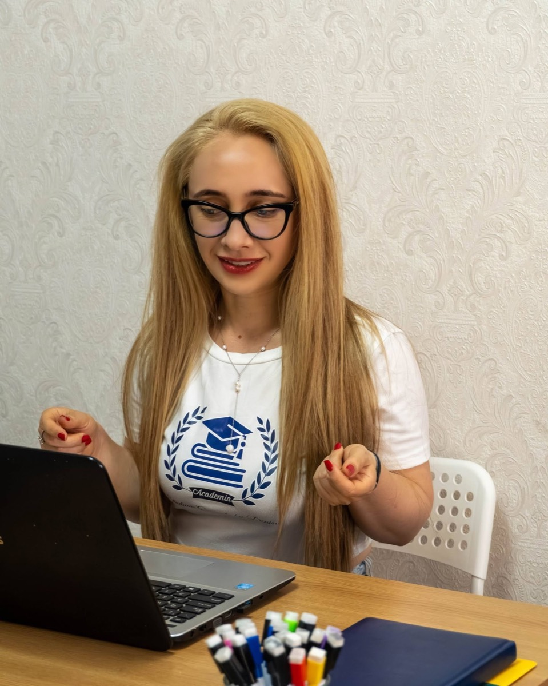

Despre Academia Studium Generale
Studium generale era numele medieval al școlii deschise oricui venea să învețe, indiferent de unde. Am păstrat numele pentru că descrie exact ce încercăm: un loc unde contează ce vrei să înveți, nu de unde vii sau ce notă ai acum.
Cum a început
Academia a pornit dintr-o masă din bucătărie și patru elevi de clasa a XII-a care nu mai înțelegeau nimic la analiză matematică. Denisa preda deja de nouă ani la clasă și vedea aceeași problemă în fiecare an: la treizeci de elevi într-o sală, cel care nu întreabă rămâne în urmă tăcut, iar când se observă, e martie.
Primul lucru care a funcționat n-a fost o metodă de predare. A fost o foaie de hârtie pe care scria, negru pe alb, ce capitole se acoperă și până când. Părinții au cerut-o și pentru anul următor. De acolo a rămas.
Nu promitem note. Promitem că veți ști în fiecare lună unde e copilul și că nimeni nu rămâne în urmă fără să observăm.
De ce maximum șase
Șase e numărul la care fiecare elev apucă să vorbească în fiecare ședință. La șapte, cineva tace. La zece, trei tac constant și devin invizibili, exact ce se întâmplă la școală, doar că mai scump.
Nu e o cifră de marketing: dacă o grupă e plină, se deschide alta sau se intră pe listă de așteptare. Nu adăugăm al șaptelea scaun.

Cum arată un an
Septembrie: testul de intrare
O ședință de 50 de minute, gratuită. Nu e un examen și nu se dă notă: ne trebuie doar harta reală a ce știe elevul, ca planul să nu pornească de la o presupunere.
Octombrie–mai: planul scris
Fiecare elev primește lista de capitole, ordinea și termenele. La finalul fiecărei luni pleacă un raport către părinte: ce s-a parcurs, procentul din programă, unde stă prost și ce urmează.
Lunar: simulare în condiții reale
Timp cronometrat, subiecte de tip examen, barem oficial. Nota intră în raport, ca să se vadă linia, nu impresia.
Iunie: examenul
Ultimele două săptămâni sunt doar recapitulare și subiecte date, fără materie nouă. Nimeni nu învață un capitol nou cu patru zile înainte de Bacalaureat.
Ce nu facem
- Nu garantăm note. Cine vă garantează o notă vă vinde altceva.
- Nu ținem elevul în abonament dacă nu are ce câștiga. V-o spunem noi primii.
- Nu schimbăm profesorul la mijlocul anului.
- Nu facem grupe mixte de clase diferite ca să umplem locurile.
Unde ne găsiți
Ședințele se țin în centru sau online, pe aceeași platformă tot anul. Cele online nu sunt o variantă de rezervă: au același plan, aceleași materiale și același raport.
·